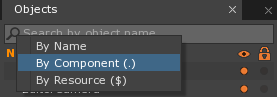
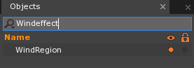
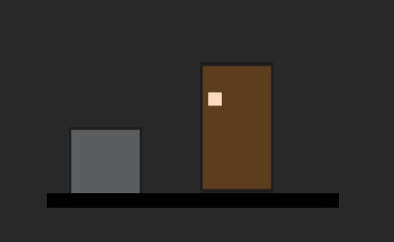

Regions & Physics Effects
This lesson covers using Regions as trigger volumes and applying PhysicsEffects to Regions. It covers the VortexEffect, FlowEffect, and WindEffect.
Learning Objectives
- Create Regions with specific PhysicsEffects
- Become familiar with three commonly-used PhyiscsEffects: VortexEffect, FlowEffect, and WindEffect
- Discover what objects and properties PhysicsEffects can affect
| Vocabulary | |||
|---|---|---|---|
| PhysicsEffect | Dynamic State | RigidBody | Collider |
| Ghost Collider | Region | Space | |
Level Setup
- CreateNewProject
WhiteBlock Object
- Command :
CreateSpriteor - In Properties Window
- Set Name to: WhiteBlock
- Add the RigidBody component
- Add the BoxCollider component
- Under Transform
- Set Translation to: [-7.5, 8, 0]
- Under RigidBody
- Set AllowSleep to: False
PlatformGround Object
- Command :
CreateSpriteor - In Properties Window
- Set Name to: PlatformGround
- Add the RigidBody component
- Add the BoxCollider component
- Under Transform
- Set Translation to: [0, -6, 0.03]
- Set Scale to: [20, 1,1]
- Under Sprite
- Set Color to: [R: 0, G: 0, B: 0]
- Under RigidBody
- Set DynamicState to: Static
- Save the project and run the game
The WhiteBlock object should fall due to the default gravity of LevelSettings object:
{kind=link}
Physics Effects Review
In the Adding Components snippet we had a Physics Effects intro covering the DragEffect and GravityEffect components. A PhysicsEffect is a component that applies some sort of a force to an object. A PhysicsEffect can be attached in a variety of ways. This PhysicsEffect performs its action every frame according to the rules of the object it’s attached to.
Regions
A Region is a component primarily used for trigger volumes. A region requires a Collider to define what the collision volume is. Regions contain the info of the objects inside of it (if they have a Collider). This allows us to conveniently do things with only the objects that are within a specific area.
Regions and Physics Effects
What will happen if we applied a PhysicsEffect to an object that has been marked as a Region? Previously, we attached PhysicsEffects to objects, particularly LevelSettings. Only objects that had a RigidBody component with a DynamicState set to Dynamic were affected. One of the main features of a region is that the PhysicsEffects attached to a region will be automatically applied to any objects with a RigidBody component inside of it. Let’s see it in action.
Attaching Physics Effects to Regions
WindEffect
WindRegion Object
Command :
CreateSpriteorIn Properties Window
- Set Name to: WindRegion
- Add the RigidBody component
- Add the BoxCollider component
- Add the Region component
- Under Transform
- Set Translation to: [-6, -3.5, 0.01]
- Set Scale to: [5, 5, 1]
- Under Sprite
- Set Color to: [R: 255, G: 255, B: 255, A: 0.25]
- Under RigidBody
- Set DynamicState to: Static
- Add the WindEffect component
- Make sure the WindRegion object’s WindEffect component has the following properties:
{kind=link}
Here the wind pushes our WhiteBlock up when the WhiteBlock comes in contact with the top of the WindRegion, making it appear to jump:
{kind=link}
Ghost Collider
What if we wanted to allow objects to exist or move in and out of a Region? We can achieve this by setting the Collider’s Ghost property to True.
- Stop the Game
- Select the WindRegion object
- In the Properties Window
- Under BoxCollider
- Set Ghost to: True
- Under BoxCollider
- Save the project and run the game
Now our WhiteBlock should pass through the region:
{kind=link}
The WhiteBlock object falls and lands on the PlatformGround object. As soon as it is within the WindRegion object’s Collider area, the WhiteBlock object is affected by the WindEffect attached to the WindRegion object. Let’s experiment by adding another object.
HeavyBlock Object
- In the Level Window
- Select the WhiteBlock object
Ctrl+Cto CopyCtrl+Vto Paste
- In Properties Window
- Set Name to: HeavyBlock
- Under Transform
- Set Translation to: [-4.5, 8, 0]
- Set Scale to: [3, 3, 1]
- Save the project and run the game
With our HeavyBlock:
{kind=link}
Notice how the HeavyBlock is not moved as easily by the WindEffect as the WhiteBlock. This is because the increased size of the HeavyBlock results in a larger mass. You can compare these by looking at the Mass property in the RigidBody component:
{kind=link}
Larger mass means that a larger force is required to accelerate it to the same speed.
Determining Mass
RigidBody uses mass in its physics calculations, so how does it determine the mass of an object?
mass = density * volume
density:
- The Density of a collider’s PhysicsMaterial is taken into account: higher the density, larger the mass.
volume:
- When a collider is attached to an object, RigidBody determines the mass by using its shape to define the volume.
Note: The scale property of the Transform component also scales the collider. When we scaled the block, we increased how much space it takes up, or its volume. By increasing the volume of the collider, we also increased HeavyBlock’s mass.
mass:
- If the object is the parent to other objects with colliders, its children will add their mass to its own.
- Without a collider, it assumes that the mass is 1.
- If an object has the MassOveride component, it will use that value instead of calculating it from the density and volume determined from the above factors.
VortexEffect
A vortex effect applies a force on an object in way that is similar to how a tornado would. Here is a diagram showing a summary of the VortexEffect:
{kind=link}
VortexRegion Object
Command :
CreateSpriteorIn Properties Window
- Set Name to: VortexRegion
- Add the RigidBody component
- Add the BoxCollider component
- Add the Region component
- Under Transform
- Set Translation to: [3, -1, 0.01]
- Set Scale to: [5, 9, 1]
- Under Sprite
- Set Color to: [R: 255, G: 128, B: 0, A: 0.25]
- Under RigidBody
- Set DynamicState to: Static
- Under BoxCollider
- Set Ghost to: True
Add the VortexEffect component to the VortexRegion object with the following properties:
{kind=link}
The ForceStrengthAtMinDistance and ForceStrengthAtMaxDistance properties of the VortexEffect are referring to the perpendicular force as shown in the diagram above. The InwardStrengthAtMinDistance and InwardStrengthAtMaxDistance properties are referring to the inward force as shown in the diagram above.
You can see the MinDistance and MaxDistance properties governing where those values are used in the debug display:
{kind=link}
The Red circle Marks the MinDistance and the Green circle marks the MaxDistance
When viewed from an angle, you can more clearly see the VortexAxis:
{kind=link}
The black vector protruding from the center of the object indicates the vortex axis
The EndCondition property controls how objects are affected by the vortex when still in contact with the region applying the effect, but beyond the MaxDistance range (in our case the corners of our region falling outside of our green circle). We’ll leave ours at ClampToMax, so the ForceStrengthAtMaxDistance will be applied.
Those items falling inside the red circle have the ForceStrengthAtMinDistance applied to them.
In the Object Window
- Left Click on the magnifying glass and choose By Component

Search for: WindEffect

Select the found object having that component
In the Properties Window
- Under WindEffect
- Set WindDirection to: [1, 0, 0]
- Under WindEffect
Delete the HeavyBlock object
The WhiteBlock object falls into the “wind region” and is “blown” towards the “vortex region” where the VortexEffect that has been applied to the VortexRegion object is applying forces to the WhiteBlock object in a vortex-like manner as shown in the diagram above.
Running the game we see this:

{kind=link}
FlowEffect
A flow effect will apply a force in a direction to make the objects inside it move at a desired speed. By changing the MaxFlowForce you change the acceleration of the affected objects by controlling how strongly they can be pushed. The flow effect applies a force up to MaxFlowForce in strength in order to align it with the FlowDirection and reach the desired FlowSpeed.
FlowRegion Object
Command :
CreateSpriteorIn Properties Window
Set Name to: FlowRegion
Under Transform
- Set Translation to: [8, 2, 0.02]
- Set Rotation to: [0, 0, -75]
- Set Scale to: [15, 4, 1]
Under Sprite
- Set Color to: [R: 255, G: 0, B: 255, A: 0.25]
Under RigidBody
- Set DynamicState to: Static
Under BoxCollider
- Set Ghost to: True
Add the FlowEffect component to the FlowRegion object; make sure it has the following properties:
{kind=link}
After including our FlowRegion:
{kind=link}
When the WhiteBlock comes into the FlowRegion’s Collider area it looks like it bounces off of the FlowRegion. What happened? We set the BoxCollider component of the FlowRegion Ghost property to True, right? Yes, it just so happens we also set the FlowEffect’s FlowDirection property is set to [-1, 0, 0], so it appears like our blocks are bouncing off the Flow Region as they are pushed strongly along the negative x-axis. This slows down objects entering the flow from the side. Notice how the WhiteBlock object moves along the world’s x-axis. What if we wanted to make the flow direction be along the FlowRegion object’s local x-axis?
- Close the Game Window
- Select the FlowRegion object
- In the Property Window
- Under FlowEffect
- Set LocalForce to: True
- Under FlowEffect
- Save the project and run the game
Here you can see it is pulled along the its local x-axis:
{kind=link}
If you wait long enough it should fall back into the White block as a perpetual machine.
The flow effect can pull objects to the “center” of the flow field, where the center is defined as the center of the object along the perpendicular of the flow direction.
- Close the Game Window
- Select the FlowRegion object
- In the Property Window
- Under FlowEffect
- Set AttractToFlowCenter to: True
- Under FlowEffect
- Save the project and run the game
Now when the WhiteBlock enters the flow region, it not only moves along the local x-axis of the FlowRegion object, but also moves to the center of the flow region (perpendicular to the flow direction).
Here we can see the WhiteBlock is closer to the center of the region than before:
{kind=link}
What PhysicsEffects Affects
These are some of the ways PhysicsEffects will behave based on what they are attached to:
- Space: If attached to a Space, the effect will be applied to all objects inside of the Space.
- Region: If attached to an object that has a Region component, it will be applied to all of the objects inside of the Region.
- RigidBody: If attached to an object that has a RigidBody component and does not have a Region component, then the effect will be applied to the RigidBody itself (only that object).
- Collider: If attached to an object that has a Collider component and does not have a RigidBody or Region component, then the effect will be applied to the parent object. This is primarily useful for creating an object that should apply an effect based upon its position relative to its parent, such as a thruster object attached to a rocket.
Now we know how to use Regions as trigger volumes, and apply PhysicsEffects to Regions.
On Your Own
Explore attaching the PhysicsEffects you learned at different levels to make interesting behavior on your game objects.
- Try adding new PhysicsEffects to the level.
- What happens if you add multiple PhysicsEffects to the WhiteBlock? |br| How do they interact?
- What happens if a Region applies a PhysicsEffect that negates one on the Level? |br| (e.g. the same magnitude gravity, but in the opposite direction) |br| Do they cancel out? |br| Does the Region override the Level? |br| Does the Level override the Region?
Explore other components that fall under the PhysicsEffect tag and their properties, e.g. PointGravityEffect.